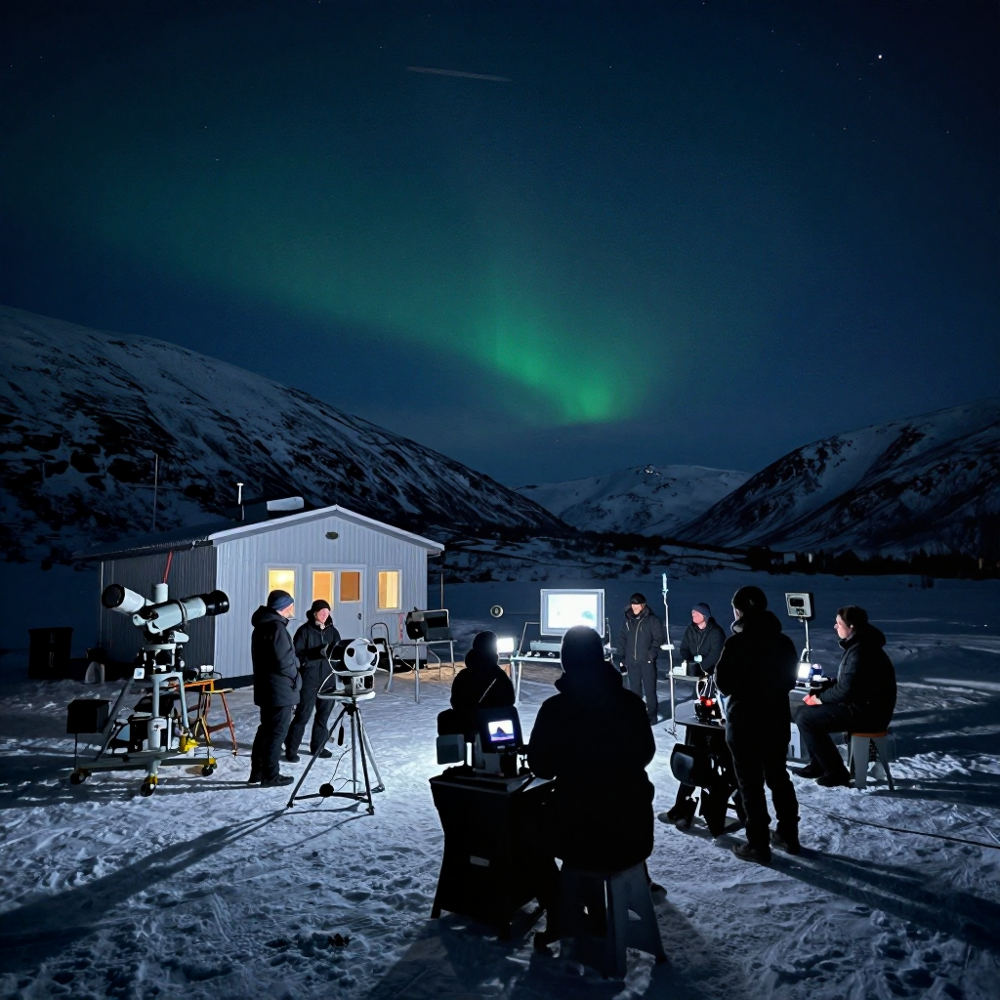
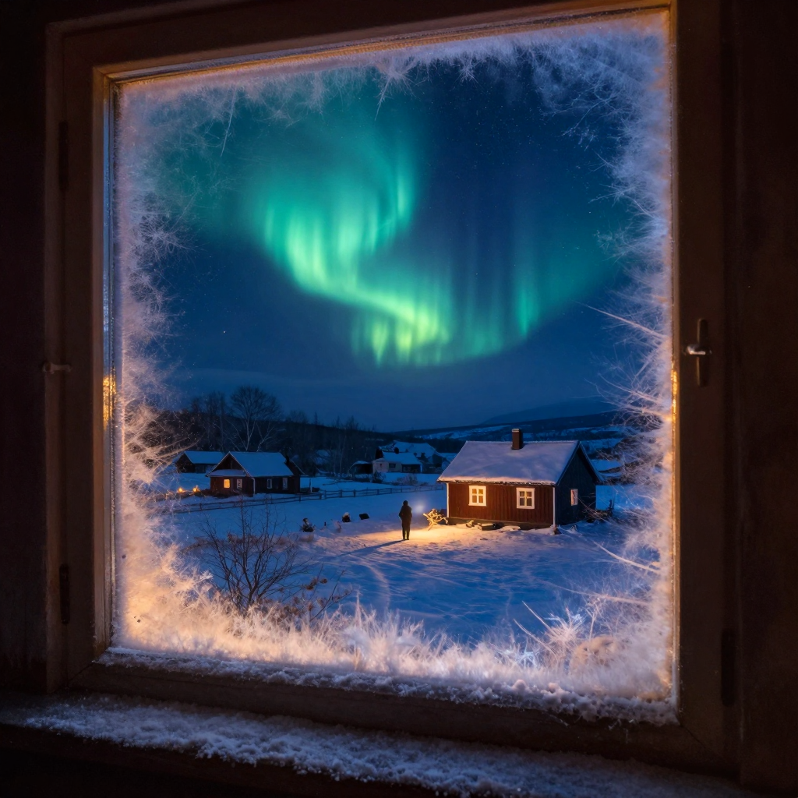

The Hessdalen Lights

The mysterious Hessdalen Lights - unexplained glowing orbs in Norway's sky!
In a remote valley in Norway, strange lights have been appearing in the sky for nearly a century. These glowing orbs float through the air, change colors, and sometimes dart around at incredible speeds. Thousands of people have seen them, and scientists have been studying them for decades - but no one can fully explain what they are!
But here's the mystery: what causes these lights? Are they a rare natural phenomenon, something from outer space, or something else entirely?
What Are the Hessdalen Lights?
The Hessdalen Lights appear in the Hessdalen valley in central Norway. They look like glowing balls of light, usually white or yellow, but sometimes red, blue, or green. They can be as small as a basketball or as big as a car!
These lights don't behave like anything else we know. They can hover motionless for hours, drift slowly through the sky, or suddenly zoom away at amazing speeds. Some have even been seen splitting into multiple lights or merging together!
💡 Frequency
At their peak in the 1980s, the lights appeared up to 20 times per week! Today, they're seen about 10-20 times per year.
The History of Sightings

The remote Hessdalen valley in Norway, home to one of the world's most studied unexplained phenomena.
Local people have reported seeing strange lights in Hessdalen for over 100 years. But in December 1981, something changed - the lights started appearing much more frequently and intensely!
For the next several years, the lights appeared almost every night. They became so common that tour groups started coming to watch them! Scientists from around the world descended on the tiny valley to study this mystery.
🔭 Scientific Study
Since 1983, scientists have set up permanent research stations in Hessdalen to monitor the lights with cameras and instruments!
The Scientific Investigation

Scientists have used radar, spectrographs, and cameras to study the lights - but they remain mysterious!
Scientists have proposed many theories about what causes the Hessdalen Lights:
- Combustion of dust: The valley contains minerals that might create burning plasma balls
- Battery hypothesis: Special geological conditions might create natural "batteries" that produce glowing plasma
- Piezoelectric effect: Pressure on certain rocks might generate electricity that creates light
- Dusty plasma: Charged dust particles in the air might form glowing clusters
What Makes This Mystery Special?
Unlike many unexplained phenomena, the Hessdalen Lights are:
- Well-documented: Thousands of photographs and videos exist
- Studied scientifically: Real scientists with real equipment have investigated them
- Predictable: They appear often enough to be studied regularly
- Unexplained: Despite decades of study, no theory explains everything!
🔬 Spectral Analysis
When scientists analyze the light's spectrum, they find it contains elements like scandium - a rare earth element found in the valley's soil!
The Mystery Continues
Today, researchers continue to study the Hessdalen Lights. Automated cameras watch the valley 24/7. Scientists hope that new technology might finally solve this mystery.
Whatever they are, the Hessdalen Lights remind us that our world still holds secrets waiting to be discovered!
Clear Summary of the Evidence
The Hessdalen Lights can sound dramatic, but the best way to understand it is to separate strong evidence from speculation. This article focuses on documented facts, source quality, and clear historical context.
In simple terms, this topic matters because it connects three ideas: what happened, how we know, and what remains uncertain. The core story in The Hessdalen Lights is easier to follow when we use a timeline, define key terms, and point directly to sources.
In a remote valley in Norway, strange lights have been appearing in the sky for nearly a century. These glowing orbs float through the air, change colors, and sometimes dart around at incredible speeds. Thousands of people have seen them, and scientists have been studying them for decades - but no one can fully explain what they are!
Background Timeline (What Happened, Step by Step)
- But in December 1981, something changed - the lights started appearing much more frequently and intensely!
- Since 1983, scientists have set up permanent research stations in Hessdalen to monitor the lights with cameras and instruments!
- Experts continue revisiting The Hessdalen Lights as better tools and stronger source checks become available.
- Experts continue revisiting The Hessdalen Lights as better tools and stronger source checks become available.
- Experts continue revisiting The Hessdalen Lights as better tools and stronger source checks become available.
This timeline view clarifies the sequence of events and helps test whether later claims fit documented records.
What We Know with Strong Support
Across discussions of The Hessdalen Lights, several points are consistently supported by records or repeatable analysis:
- In a remote valley in Norway, strange lights have been appearing in the sky for nearly a century.
- These glowing orbs float through the air, change colors, and sometimes dart around at incredible speeds.
- Thousands of people have seen them, and scientists have been studying them for decades - but no one can fully explain what they are!
- Are they a rare natural phenomenon, something from outer space, or something else entirely?
These claims are stronger because they can be checked independently, rather than depending on one dramatic story or one unverified source.
How Researchers Study This Topic
Good history is a method, not just a story. When experts examine The Hessdalen Lights, they usually combine source criticism, technical analysis, and contextual comparison.
- Researchers collect instrument data first, then compare eyewitness reports with weather, aviation, and technical records.
- Investigators try to rule out ordinary explanations before considering rare or unusual hypotheses.
- Independent replication matters: a claim is stronger when separate teams can observe or verify similar patterns.
Strong analysis starts by checking whether a claim is supported by verifiable evidence and independent review.
What Experts Still Debate
Even with good evidence, not every question has a final answer. In The Hessdalen Lights, debates often continue because the surviving data is incomplete, damaged, or interpreted in different ways.
One common source of confusion is mixing the topics of What Are the Hessdalen Lights?, The History of Sightings, and The Scientific Investigation as if they prove the same thing. In reality, each part of the story may require different standards of proof.
A balanced approach is to keep uncertainty visible: we can confidently state what records show today, while leaving room for future evidence to update the picture.
Myths vs. Evidence
Myth: If a topic is mysterious, experts have no idea what happened.
Evidence-based view: Usually, experts know many parts of the story; the debate is about specific details.
Myth: The most dramatic explanation is probably true.
Evidence-based view: The best explanation is the one that matches the most verifiable facts with the fewest assumptions.
Myth: New claims automatically replace old research.
Evidence-based view: New claims become accepted only after careful checks, replication, and critical review.
Why This Story Still Matters Today
The Hessdalen Lights is not only a curiosity from the past. It also provides a well-documented case for comparing primary records, later interpretations, and unresolved evidence questions.
This matters because careful source-checking reduces misinformation and keeps historical interpretation anchored to evidence.
Mini Glossary (Plain Language)
- Primary source: A record made close to the event, like a report, letter, inscription, or official document.
- Secondary source: A later explanation that interprets primary evidence.
- Hypothesis: A proposed explanation that must be tested against evidence.
- Consensus: The view most experts currently support, knowing it can change with new data.
- Instrument data: Measurements from devices such as cameras, radar, or sensors.
- False positive: A result that looks meaningful but is caused by error or misidentification.
Quick Recap
If you remember only three things about The Hessdalen Lights, keep these: (1) there is real evidence worth studying, (2) some questions remain open, and (3) careful source-checking is the best path to reliable understanding.
That balance of curiosity and caution helps separate durable historical findings from speculation.
Extended Context for Deeper Reading
When we revisit The Hessdalen Lights with patience, the most useful progress comes from careful comparison: early reports versus later analysis, confident claims versus documented limits, and popular retellings versus primary evidence. This method yields a clearer map of established findings and unresolved questions.
Additional context: research on this topic changes as new documents, field surveys, and technical methods become available. Current evidence supports the central narrative presented here, but finer points such as dating precision, attribution details, and event reconstruction can shift when stronger datasets appear. This is why historical writing compares primary records, cross-checks later interpretations, and updates claims when new peer-reviewed findings are published.
References & Further Reading
Editorial note: We cross-check claims across multiple independent sources. See our Editorial Policy.